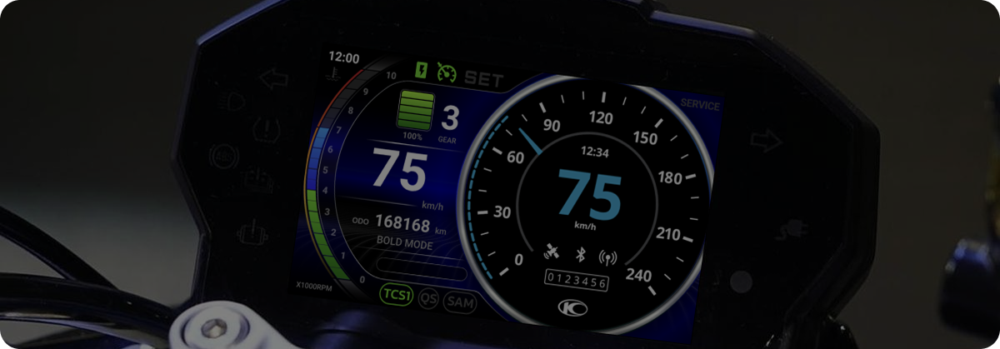
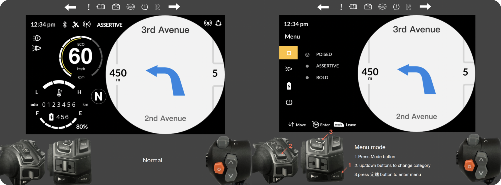
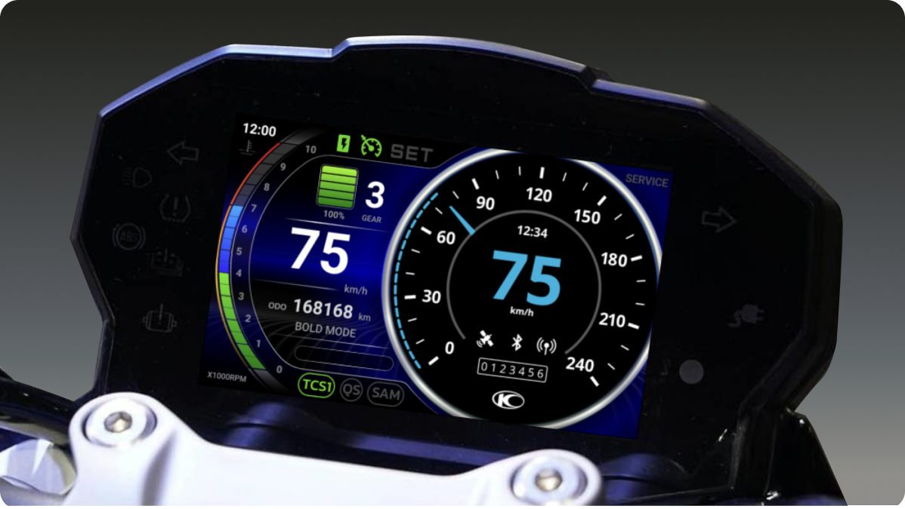
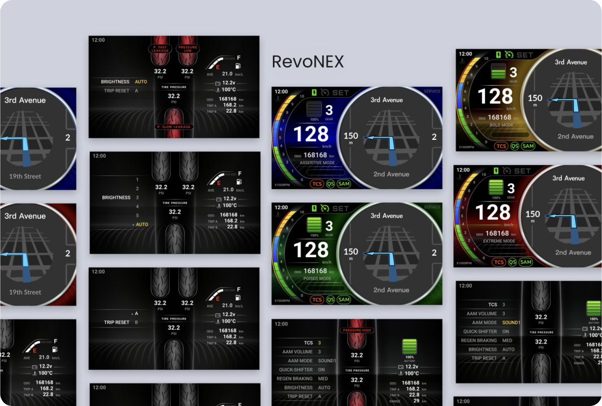

Case Study · Vehicle HMI
An intuitive motorcycle dashboard
The main instrument cluster for high-level electric motorcycles — an electric speedometer that is easy to use at a glance, satisfies traffic regulations, and still looks beautiful. I led the UX from the earliest phase through to production design.

The next direction, at a glance, in one second
The mission: add a navigation feature to the existing scooter dashboard, so the rider gets the next direction with a glance, in one second.
The challenge: traffic regulations require certain information to stay on screen continuously during riding. Placing that information — while managing dynamic data like the following route — on a small display takes real work. The companion app also had to be redesigned to manage multiple dashboards.
It was a genuinely collaborative process. I worked closely with one program manager, one graphic designer, one firmware engineer, two software engineers, and one QA engineer.
UX consistency across displays, under traffic regulation
We already had a dashboard product with a 5″ square display; the following product was a 7″ display in 4:3 ratio. Both had to be controlled by the same app and show the same navigation. Unlike the 5″ vice dashboard, the 7″ display is a central dashboard embedded in a heavy motorcycle — yet the user experience had to stay consistent across both.
Traffic regulation
Some information must be shown on screen at all times during riding. I worked from the list of regulation icons, ensuring the rider can see them at any moment of the ride.
One system, many displays
The new design had to fit into the original app and dashboard system, keeping the app experience the same between the original small displays and the new one.
Wireframes, prototypes, and user feedback
I designated specific areas to display navigation information, while the remaining space was allocated to traffic information — replacing the traditional LED clusters. Wireframes kept stakeholders aligned and confirmed every element was in the right place and intuitive to use.
Unlike the original design, the target motorcycle featured additional interaction hardware — a handle with more buttons. I arranged these buttons to enable richer interaction, which made it necessary to build a rapid prototype to simulate the interactive behavior.
We tested the prototype with five internal users, and their feedback helped us refine the interface functions.

Technology-knight style
To differentiate electric vehicles from fuel vehicles, we used distinct icons on the dashboard, taking the time to carefully confirm and design each element. Along the way we tested prototypes, held team discussions, and collaborated on wireframes and solutions for the critical issues — until the wireframe and UI flow were confirmed.
For the visual language, we adopted a futuristic style inspired by technology knights, incorporating the original instrument design to reinforce the technological feel of the heavy motorcycle.

From wireframe to production
The confirmed flow shipped as the production design — an electric speedometer that keeps regulation information always visible, delivers the next direction in a single glance, and stays consistent with the rest of the dashboard family.
